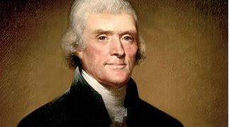

-
043 Thomas Jefferson: Complex
- pure
- VOA Learning English presents America's Presidents.
- Today we are talking about Thomas Jefferson. Although he took office in 1801, he is still one of the country’s best-known and most popular presidents. You can see a memorial honoring him in Washington, DC.
- Jefferson is often linked to the country’s history of self-government, separation of church and state, and public education.
- Over time, Jefferson’s name also became linked to the continuation of slavery until the Civil War, and to the loss of land for Native Americans.
-
Founding father
- Jefferson was born in 1743 and grew up in the hills and low mountains of Virginia. His family’s wealth enabled him to get an excellent education.
- Jefferson also learned to ride horses, dance and explore the natural world.
- In the 1770s, Jefferson supported the American Revolution against Britain. He is probably most famous for being the lead writer of the Declaration of Independence.
- Jefferson went on to hold many positions in the country’s new state and national governments. He served as governor of Virginia, a minister to France, secretary of state for President George Washington, and the vice president under President John Adams.
-
Virginia planter and slave owner
- Jefferson played an important part in the creation of the U.S. But he often wrote to friends about how he most wanted to retire from public service and return to his home in Virginia.
- In the 1760s, he designed a house there that he called Monticello – the word means “little mountain” in Italian.
- About 130 slaves lived on Monticello’s grounds at any time. They worked in Jefferson’s home, farms, and on special projects, such as making cabinets and nails.
- Jefferson owned about 600 slaves during his life. Yet he said he disliked slavery. He believed God would judge slave owners severely.
- And, of course, Jefferson himself wrote in the Declaration of Independence “all men are created equal” and have the right to “Life, Liberty and the pursuit of Happiness.”
- Yet Jefferson did not use his political power to end slavery. He expected future generations would permit slavery to end slowly across the country.
- Jefferson’s words and actions on slavery are contradictory. This conflict is especially evident because Jefferson likely had a long relationship with a slave at Monticello.
- Her name was Sally Hemings. Evidence suggests that Jefferson was the father of her six children of record.
-
Third U.S. president
- In 1801, Thomas Jefferson left Monticello to become the third U.S. president. His inauguration was the first held in Washington, DC.
- Jefferson’s government was a break from the earlier administrations. The first two presidents, George Washington and John Adams, supported a strong federal government. Jefferson, on the other hand, wanted to limit federal government.
- As president, Jefferson cut the national debt. He reduced the military. He disliked the power of the Supreme Court over the laws Congress made. And he rejected appearances that made the U.S. president look like a European king.
- One of the lasting images of Jefferson is of him receiving guests in old clothes and slippers.
- But as president, Jefferson also appeared strong and powerful when dealing with foreign nations. Jefferson increased American naval forces in the Mediterranean to guard against threats to American ships.
- And he permitted U.S. officials to buy a huge piece of land from France, even though the Louisiana Purchase added to the national debt and exceeded the power the Constitution gave the president.
- In general, historians consider Jefferson’s first term as president a success. Voters did, too, because he easily won a second term.
- But those last four years were difficult. Jefferson’s popularity suffered, especially when he stopped all American trade with Europe. Jefferson aimed to limit U.S. involvement in a war between Britain and France.
- Instead, critics say he ruined the American economy.
-
Legacy
- Critics also attacked both Jefferson’s political ideas and his personal qualities. George Washington worried that Jefferson would weaken the strong federal government he had worked hard to create.
- And even friends suggested in their letters that Jefferson was too idealistic.
- Jefferson’s opponents also accused him of not being a Christian, although he said he was. However, he did not believe the government should make rules about religion.
- He wrote that the government should worry only about acts that hurt other people. He said it does not harm him if his neighbor says “there are 20 gods or no gods. It neither picks my pocket nor breaks my leg.”
- Jefferson’s thinking on the separation of church and state remains important – and, in general, popular – in the U.S. today.
- However, Jefferson is linked to problems faced by Native Americans. He tried to get Indian nations to enter into treaties that ultimately took away their land. He wanted Native Americans to become more like European-Americans. His policies made them depend on the federal government.
- And Jefferson took no major action to end slavery, either in his personal life or as a public official.
- At the end of his life, Jefferson wrote proudly about his accomplishments. He said he wanted to be remembered for three things: writing the Declaration of Independence, supporting religious freedom, and creating the University of Virginia.
- For the most part, he is.
- Jefferson also supported free public education, especially for those who could not pay for school.
- But his time at Monticello had many sorrows. His wife, Martha, had died in 1782 after difficulty in childbirth. Most of his children also died before him.
- In addition, the cost of improving and caring for Monticello, as well as the money he spent on fine wine and good food, had ruined him financially.
- Eventually, one of his daughters had to sell her father’s beloved Monticello and the slaves who lived there to pay his debts.
- Jefferson died in his bed at the age of 83. The last detail of his life – which Americans love to tell – is that he passed away on America’s birthday, exactly 50 years after the signing of the Declaration of Independence.
-
-
def
- VOA Learning English presents America's Presidents.
- Today we are talking about Thomas Jefferson. Although he took office /in 1801, he is still one of the country’s best-known /and most popular presidents. You can see a memorial(n.) /honoring him /in Washington, DC.
-
▶ memorial 纪念碑（或像等）
-
▶ Thomas Jefferson

-
- Jefferson is often linked to the country’s history of self-government, separation of church and state, and public education.
- 人们常常把杰斐逊, 与美国自治、政教分离和公共教育的历史联系在一起。
- Over time, Jefferson’s name /also became linked to the continuation of slavery /until the Civil War, and to the loss of land /for Native Americans.
-
Founding father
- Jefferson was born in 1743 /and grew up /in the hills and low mountains of Virginia. His family’s wealth /enabled him to get an excellent education.
- Jefferson also learned /to ride horses, dance and explore the natural world.
- In the 1770s, Jefferson supported the American Revolution against Britain. He is probably most famous /for being the lead writer /of the Declaration of Independence.
- Jefferson went on /to hold many positions /in the country’s new state and national governments. He served as governor of Virginia, a minister to France, secretary of state for President George Washington, and the vice president /under President John Adams.
-
▶ minister ( often Minister ) a person, lower in rank than an ambassador , whose job is to represent their government in a foreign country 公使；外交使节
/( BrE ) (in Britain and many other countries) a senior member of the government who is in charge of a government department or a branch of one （英国及其他许多国家的）部长，大臣
- 杰斐逊后来在美国新成立的州和国家政府中担任许多职位。他曾担任弗吉尼亚州州长、驻法国公使、乔治。华盛顿总统时期的国务卿。
-
-
Virginia planter /and slave owner
- Jefferson played an important part /in the creation of the U.S. But he often wrote to friends /about how he most wanted /to retire from public service /and return to his home in Virginia.
- In the 1760s, he designed a house there /that he called Monticello – the word means “little mountain” in Italian.
-
▶ planter : a person /who owns or manages a plantation /in a tropical country 种植园主；种植园经营者 /花盆 /a machine that plants seeds, etc. 播种机；插秧机
-
- About 130 slaves /lived on Monticello’s grounds /at any time. They worked in Jefferson’s home, farms, and on special projects, such as making cabinets and nails.
- 在任何时候，Monticello 的土地上都住着大约130名奴隶。他们在杰斐逊的家中、农场工作，并从事一些特殊的项目，如制作橱柜和钉子。
- Jefferson owned about 600 slaves /during his life. Yet he said /he disliked slavery. He believed /God would judge(v.) slave owners severely.
- 他相信上帝会严厉地审判奴隶主。
- And, of course, Jefferson himself /wrote in the Declaration of Independence /“all men are created equal” /and have the right /to “Life, Liberty(n.) and the pursuit of Happiness.”
-
▶ liberty (n.)[ U ] freedom to live as you choose without too many restrictions from government or authority 自由（自己选择生活方式而不受政府及权威限制） /the legal right and freedom to do sth 自由（做某事的合法权利或行动自由）
/an act or a statement that may offend or annoy sb, especially because it is done without permission or does not show respect 冒犯行为（或言语）；放肆；失礼
-
- Yet Jefferson did not use his political power /to end slavery. He expected /future generations would permit slavery /to end slowly /across the country.
- 然而，杰斐逊并没有利用他的政治权力来结束奴隶制。他希望未来几代人, 能够允许奴隶制在全国范围内慢慢结束。
- Jefferson’s words and actions on slavery /are contradictory. This conflict is especially evident(a.) /because Jefferson likely had a long relationship with a slave at Monticello.
-
▶ evident (a.)~ (to sb) (that...)~ (in/from sth) clear; easily seen 清楚的；显而易见的；显然的
-> It has now become evident(a.) to us /that a mistake has been made. 我们已经清楚出了差错。
- 杰斐逊在奴隶制问题上的言行是相互矛盾的。这种冲突尤其明显，因为杰斐逊很可能与蒙蒂塞洛的一个奴隶有长期的关系。
-
- Her name was Sally Hemings. Evidence suggests that /Jefferson was the father of her six children of record.
-
▶ of record 有案可查的，记载的
-
-
Third U.S. president
- In 1801, Thomas Jefferson left Monticello /to become the third U.S. president. His inauguration was the first /held in Washington, DC.
-
▶ inauguration n. 就职典礼；开幕式；开创
- 他的就职典礼, 是第一次在华盛顿特区举行的。
-
- Jefferson’s government was a break /from the earlier administrations. The first two presidents, George Washington and John Adams, supported a strong federal government. Jefferson, on the other hand, wanted to limit(v.) federal government.
- 杰斐逊政府是与前几届政府的决裂。前两位总统，乔治·华盛顿和约翰·亚当斯，支持一个强大的联邦政府。而杰斐逊想要限制联邦政府的权力。
- As president, Jefferson cut(v.) the national debt. He reduced the military. He disliked the power of the Supreme Court /over the laws Congress made. And he rejected appearances /that made the U.S. president look like a European king.
-
▶ appearance (n.)an act of appearing in public, especially as a performer, politician, etc., or in court 公开露面；演出；出庭
-
- One of the lasting images of Jefferson /is of him receiving guests /in old clothes and slippers.
- 杰斐逊给人留下的最深刻的印象之一是, 他穿着旧衣服和旧拖鞋, 接待客人。
- But as president, Jefferson also appeared strong and powerful /when dealing with foreign nations. Jefferson increased American naval forces /in the Mediterranean /to guard against threats to American ships.
-
▶ naval (a.) connected with the navy of a country 海军的
=> 来自navy,海军。
-
▶ Mediterranean 地中海的
-
- And he permitted U.S. officials /to buy a huge piece of land /from France, even though the Louisiana Purchase /added to the national debt /and exceeded(v.) the power /the Constitution gave the president.
-
▶ exceed (v.)to be greater than a particular number or amount 超过（数量） /to do more than the law or an order, etc. allows you to do 超越（法律、命令等）的限制
-> The officers had exceeded their authority. 这些官员超越了他们的权限。
-> The price will not exceed ￡100. 价格不会超过100英镑。
-
- In general, historians consider(v.) Jefferson’s first term as president 宾补 a success. Voters did, too, because he easily won a second term.
- But those last four years /were difficult. Jefferson’s popularity(n.) suffered, especially when he stopped all American trade with Europe. Jefferson aimed to limit U.S. involvement /in a war between Britain and France.
-
▶ popularity (n.)~ (with/among sb) the state of being liked, enjoyed or supported by a large number of people 受欢迎；普及；流行
-> to win/lose popularity(n.) with the students 受到╱不受学生的欢迎
-
- Instead, critics say /he ruined the American economy.
-
Legacy
- Critics also attacked both Jefferson’s political ideas and his personal qualities. George Washington worried that /Jefferson would weaken the strong federal government /he had worked hard to create.
- And even friends /suggested in their letters that /Jefferson was too idealistic.
- Jefferson’s opponents /also accused him of /not being a Christian, although he said he was. However, he did not believe /the government should make rules about religion.
- He wrote that /the government should worry only about acts /that hurt other people. He said /it does not harm him /if his neighbor says “there are 20 gods or no gods. It neither picks my pocket /nor breaks my leg.”
- Jefferson’s thinking(n.) on the separation of church and state /remains important – and, in general, popular – in the U.S. today.
- However, Jefferson is linked to problems /faced by Native Americans. He tried to get Indian nations /to enter into treaties(n.) /that ultimately took away their land. He wanted Native Americans /to become more like European-Americans. His policies /made them depend on the federal government.
-
▶ nation [ C ] a country considered as a group of people with the same language, culture and history, who live in a particular area under one government 国家；民族 /[ sing. ] all the people in a country 国民
-
▶ treaty (n.)a formal agreement between two or more countries （国家之间的）条约，协定
-> to draw up/sign/ratify a treaty 起草╱签署╱正式批准条约
=> treat(-tract-)拉,引 + -y名词词尾
-
▶ ultimately : in the end; finally 最终；最后；终归 /at the most basic and important level 最基本地；根本上
-> All life depends ultimately on oxygen. 一切生命归根到底都要依赖氧气.
-
- And Jefferson took no major action /to end slavery, either in his personal life or as a public official.
- 没有采取重大行动来结束奴隶制
- At the end of his life, Jefferson wrote proudly about his accomplishments. He said /he wanted to be remembered /for three things: writing the Declaration of Independence, supporting religious freedom, and creating the University of Virginia.
- For the most part, he is.
- Jefferson also supported free public education, especially for those /who could not pay for school.
- But his time at Monticello /had many sorrows. His wife, Martha, had died in 1782 /after difficulty in childbirth. Most of his children /also died before him.
-
▶ sorrow (v.)(n.)~ (at/for/over sth) a feeling of great sadness because sth very bad has happened 悲伤；悲痛；悲哀 /a very sad event or situation 伤心事；悲伤事；不幸
=> 该词与 sore 虽然在词义上有所重合，但是不属于同源词，该词在词源 上指担心别人而引起的悲痛，而 sore 在词源上指自己的痛苦所造成的疼痛。
-
▶ childbirth (n.)分娩；生孩子
-
- In addition,
主the cost /of improving and caring for Monticello, as well as the money /he spent on fine wine and good food,谓had ruined him financially.-
▶ caring （care 的现在分词形式）
-
- Eventually, one of his daughters /had to sell her father’s beloved Monticello /and the slaves who lived there /to pay his debts.
- Jefferson died in his bed /at the age of 83. The last detail of his life – which Americans love to tell – is that /he passed away /on America’s birthday, exactly 50 years /after the signing of the Declaration of Independence.
-
▶ pass away ( also pass on ) to die. People say 'pass away' to avoid saying 'die' . （婉辞，指去世）亡故 /to stop existing 消失；消逝
-> civilizations that have passed away 不复存在的文明
- 他一生的最后一个细节——美国人喜欢讲——是他在美国的生日那天去世的，正好是《独立宣言》签署50周年。
-